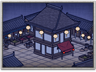

Basic Unit Statistics (can be modified by difficulty level, arts, skills, traits and retainers)
| Recruitment Cost | 750 | |
| Upkeep Cost | 250 | |
| Melee Attack | 15 | 42% |
| Charge Bonus | 22 | 44% |
| Bonus vs Cavalry | 0 | 0% |
| Range | 50 | 7% |
| Accuracy | 40 | 40% |
| Reloading Skill | 60 | 60% |
| Ammunition | 2 | 2% |
| Melee Defence | 10 | 28% |
| Armour | 3 | 20% |
| Morale | 12 | 24% |
Strengths & Weaknesses
- Excellent at hiding.
- Can climb walls very fast.
- Devastating range attack but very limited ammunition.
Abilities
- Stealth - This unit can become extremely stealthy for a short period of time, remaining hidden even when running.
- Blinding Grenades - This unit can use blinding grenades to disorientate the enemy, affecting their speed, combat ability and missile accuracy.
Requires
- Buildings: 
Description
These ninja are virtually undetectable in battle, capable of carrying out deadly surprise attacks.
Kisho ninja have mastered the art of invisibility, making them highly effective assassins who possess terrifying supernatural powers! In fact, their skills are actually the product of a lifetime of intensive training, cunning and the clever use of misdirection. The ability to move about largely unseen on the battlefield means they appear from nowhere, launch an assault on an enemy general and then vanish before they are caught or killed. In addition to a small number of deadly fire bombs, they are armed with blinding grenades to disorientate an enemy for a short time, reducing their fighting ability. To remain as stealthy as possible kisho ninja operate in small numbers, so must avoid prolonged close combat because they cannot afford to take many casualties. Historically, ninja were rarely used on the battlefield itself, although their fighting prowess was certainly equal to the challenge. Instead, a daimyo would hire them to undertake espionage missions or assassinate rivals. The ninja's role was to carry out tasks that others could not honourably accomplish, as they were not constrained by bushido, the code that governed samurai behaviour. During sieges, ninja would infiltrate an enemy's castle in disguise, gather intelligence and cause confusion by, for example, setting fires - leading the enemy to assume he had turncoats within his walls.